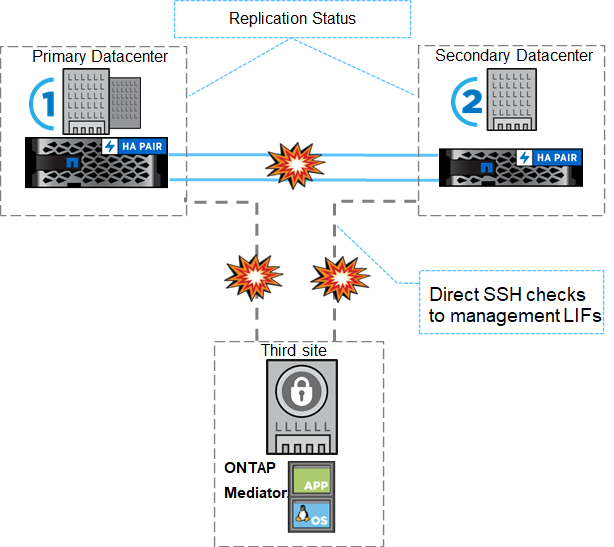
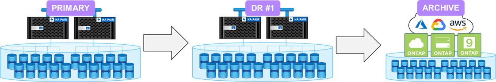
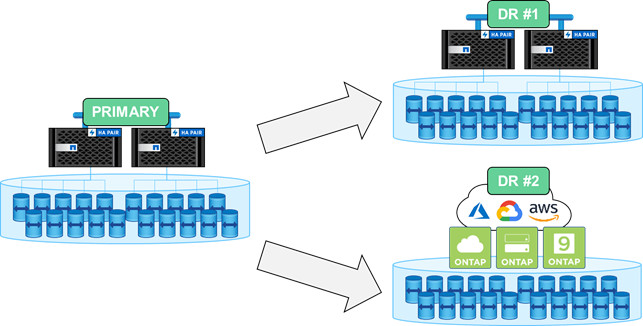
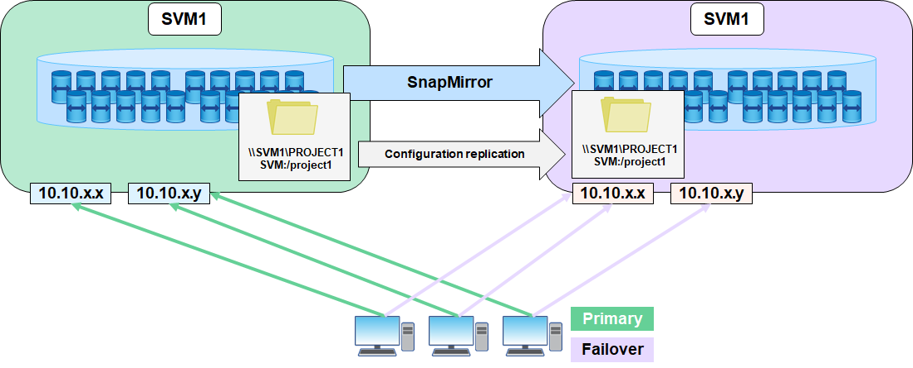

NetApp ONTAP 9.9.1 Feature Overview
NetApp ONTAP 9.9.1 Feature Overview
Data protection enhancements
 Suggest changes
Suggest changes
Data protection in the context of this document refers to both the notion of off-site replication of data, as well as automated site infrastructure failovers. This section covers the latest data protection enhancements for ONTAP 9.9.1.
Transparent application failover for SAN with SnapMirror Business Continuity
NetApp SnapMirror is an industry-leading replication technology that can be leveraged for a variety of use cases, including the following:
-
Disaster recovery for quick site failovers during an outage and fast resyncs back to primary
-
Synchronous replication for up-to-the-second copies of data on a remote site
-
Backup and archive use cases (with more Snapshot copies on the destination than on the source)
SnapMirror Business Continuity in ONTAP extends what SnapMirror offers and provides fast, easy automated failover of synchronous SnapMirror relationships for application-level, granular data protection.
SnapMirror Business Continuity makes use of a mediator to maintain quorum between sites and avoid split-brain scenarios in the event of a site failure. A new ONTAP Mediator software version (1.2) is now available and supports up to 10 ONTAP systems and automates switchovers of applications between sites within 120 seconds of failure.

MetroCluster over IP
NetApp MetroCluster (MC) software is a solution that combines array-based clustering with synchronous replication to deliver continuous availability and zero data loss at the lowest cost. Administration of the array-based cluster is simpler because the dependencies and complexity normally associated with host-based clustering are eliminated.

MetroCluster immediately duplicates all your mission-critical data on a transaction-by-transaction basis, providing uninterrupted access to your applications and data. Unlike standard data replication solutions, MetroCluster works seamlessly with your host environment to provide continuous data availability while eliminating the need to create and maintain complicated failover scripts.
With MetroCluster, you can perform the following tasks:
-
Protect against hardware, network, or site failure with transparent switchover
-
Eliminate planned and unplanned downtime and change management
-
Upgrade hardware and software without disrupting operations
-
Deploy without complex scripting, application, or operating system dependencies
-
Achieve continuous availability for VMware, Microsoft, Oracle, SAP, or any critical application
NetApp MetroCluster traditionally was implemented with a Fibre Channel backend, but more recent versions of ONTAP support the use of IP networks for the backend. This not only reduces cost and complexity for site failover infrastructure, but it also extends the range of MetroCluster to approximately 700km (or 300mi).
ONTAP 9.9.1 brings the following advancements to MetroCluster.
-
Increased volume counts to 1600 per HA pair
-
Shared layer-3 networks
-
No longer dependent on dedicated layer- 2 networks
-
ONTAP must be directly connected to router
-
No dynamic routing support
-
-
Increased nodes per site (four per site, eight per cluster)
When to choose MetroCluster versus SnapMirror Business Continuity
Since MetroCluster and SnapMirror Business Continuity share some of the same feature sets (ability to leverage existing IP networks, automated failovers, synchronous replication), the question of “when should I use each” becomes more relevant.
The answer depends on the following questions.
-
What are your service level objectives?
-
How granular do you want failovers to be?
MetroCluster provides automated infrastructure failovers for HA pairs and physical aggregates and supports SAN and NAS workloads, while SnapMirror Business Continuity offers application-level granularity for SAN workloads only.
For more information on MetroCluster over IP, see MetroCluster IP Solution Architecture and Design.
For more information on SnapMirror Business Continuity, see SnapMirror Business Continuity in ONTAP.
FlexGroup volume data protection
FlexGroup volumes are the NetApp ONTAP scale-out NAS solution, providing up to 20PB and 400 billion files in a single namespace, while offering automatically load-balanced parallel processing of high ingest workloads for a blend of capacity, performance, and simplicity.

For more information about FlexGroup volumes, see TR-4571: NetApp FlexGroup Volumes Best Practices.
In ONTAP 9.9.1, FlexGroup volumes support a variety of data protection configurations.
Cascading and fan-out SnapMirror
A SnapMirror cascade allows a storage administrator to replicate to multiple sites in serial. For example, site A can replicate to site B (on-prem or cloud) and site B can then replicate that same volume to site C (on-prem or cloud).

SnapMirror fan-out can replicate from a source volume to multiple destination volumes. So site A can replicate a source FlexGroup to sites B and C (on-prem or cloud). This offers more flexibility and resiliency in data protection configurations.

Storage virtual machine disaster recovery (SVM-DR)
SVM-DR is an ONTAP feature that allows you to replicate not just data volumes to a remote site, but also the SVM configuration details, such as CIFS shares, NFS exports, data LIFs, and even the NFS file handles to avoid remounts when failing over to the DR site.

ONTAP 9.9.1 brings support for SVM-DR to FlexGroup volumes with the following limitations.
-
No FabricPool support
-
No FlexClone
-
No SnapMirror fan-out
-
No FlexVol convert without rebaseline
SnapLock enhancements
NetApp SnapLock is the WORM compliance replication solution from NetApp. It provides integrated data protection for workloads that need to adhere to regulatory guidelines such as HIPAA, SEC 17a-4(f) rule, FINRA, and CFTC as well as national requirements for German-speaking countries (DACH).
Snaplock helps provide data integrity and retention, enabling electronic records to be both unalterable and rapidly accessible. SnapLock retention features are certified to meet strict records retention requirements as well as addressing an expanded set of retention requirements, including Legal Hold, Event-Based Retention, and Volume Append Mode.
ONTAP 9.9.1 brings the following improvements to NetApp SnapLock:
-
Storage efficiency support on WORM volumes. Support for data compaction, cross-volume/aggregate-level deduplication (AFF only), continuous segment cleaning, and Temperature Sensitive Storage Efficiency.
-
Ransomware protection for SnapLock volumes containing snapshot copies of LUNs.For more information on SnapLock, see Compliant WORM Storage Using NetApp SnapLock.
For more information on SnapLock, see Compliant WORM Storage Using NetApp SnapLock.